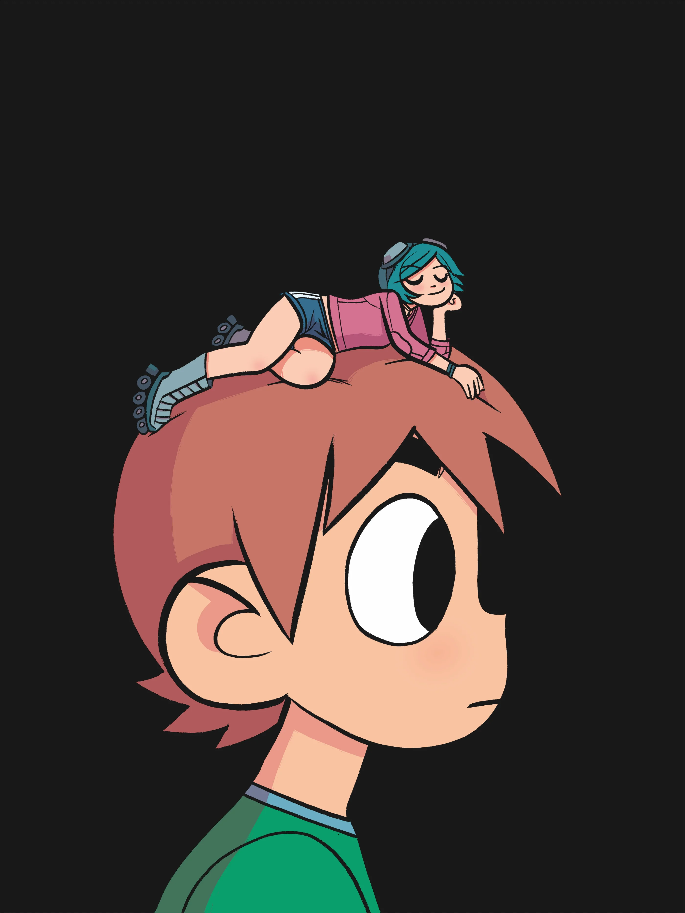
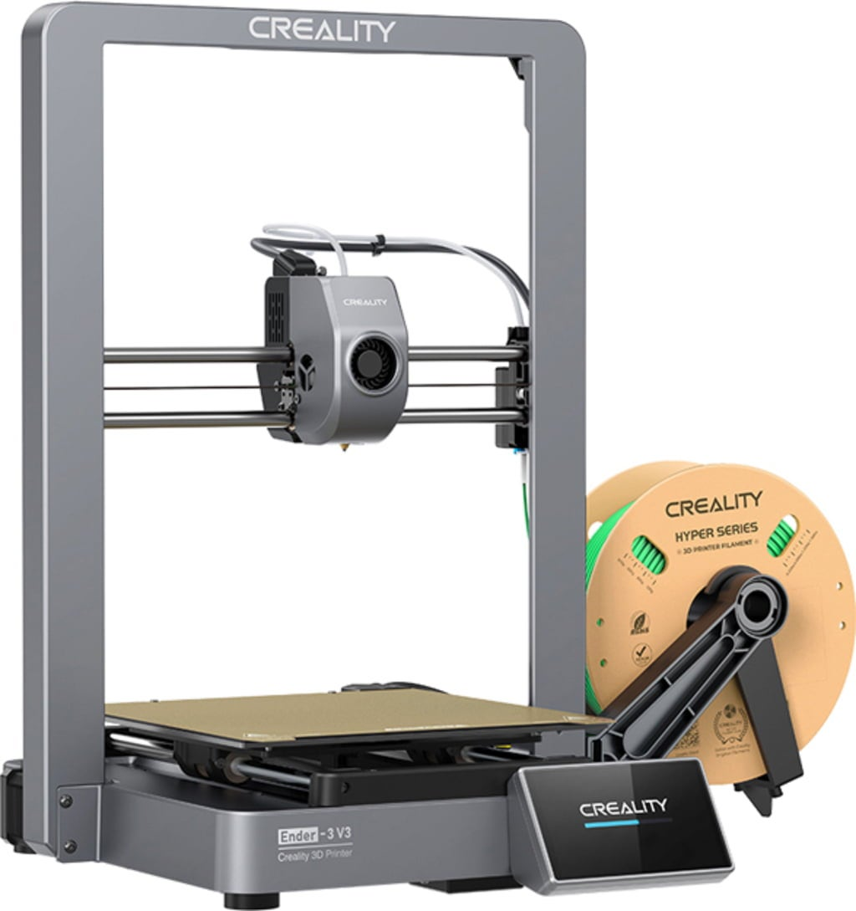

NOVO! Ispunite anketu!
Dobrodošli na moju web stranicu!
Ja sam Marko Letica i idem na Grafički fakultet u Zagrebu i
ovo je moja stranica iz kolegija Multimedijske Komunikacije 1.
Malo više o meni:
- Dolazim iz Trogira
- Jako volim računala
- U slobodno vrijeme se bavim
fotografijom i 3D printanjem
Ovo je lista mojih omiljenih videoigara:
- Super Mario Galaxy (2007.)
- Minecraft (2009.)
- Satisfactory (2024.)
Ovo je jedna pjesma koju volim, zove se Scott Pilgrim od banda Plumtree.
Pritisnite gumb da bi otvorili u vanjskom prozoru:
Pritisnite gumb da bi otvorili u vanjskom prozoru:
Na ovoj stranici ću prikazati svoje hobije i mnoštvo drugih stvari, evo primjer:
Ispod ovog paragrafa koji nije vrlo velik imate sliku mog 3D printera.
To je Ender 3 V3 od kompanije Creality:

Za 3D printanje najčešće koristim PLA plastiku, čija je kemijska formula C3H4O2
Također, iskoristio sam preko 32 kg filamenta kroz svoj hobi 3D printanja. Ispod ovog paragrafa možete pronaći tablicu svojstava za najraširenije filamente.
Svojstva filamenta za 3D printere:
| Kategorija | Parametar | Vrste materijala | |||
|---|---|---|---|---|---|
| PLA | ABS | TPU | PETG | ||
| Informacije o printanju |
|||||
| Temperatura mlaznice | 190 - 220°C | 220 - 250°C | 225 - 245°C | 230 - 250°C | |
| Printabilnost | 9/10 | 8/10 | 6/10 | 9/10 | |
| Grijano postolje | Opcionalno | Potrebno | Potrebno | Potrebno | |
| Svojstva | |||||
| Snaga | 65MPa | 40MPa | 23-43MPa | 53MPa | |
| Fleksibilnost | Ne | Ne | Da | Ne | |
| Trajnost | 4/10 | 8/10 | 9/10 | 8/10 | |
Sve ove materijale sam koristio kod 3D printanja, najviše preferiram PLA jer je jako lagan za printati.
Editanje videozapisa
Ponekad volim editati videozapise. Evo jedan primjer ispod:
A ovo je jedan video kojeg sam napravio iz šale kako utičnica eksplodira:

Moj YouTube video
Ovo je završni zadatak kojeg sam napravio za predmet Digitalne Multimedije 1; dobio sam ocjenu 5. :). A sad, uživajte u videu: